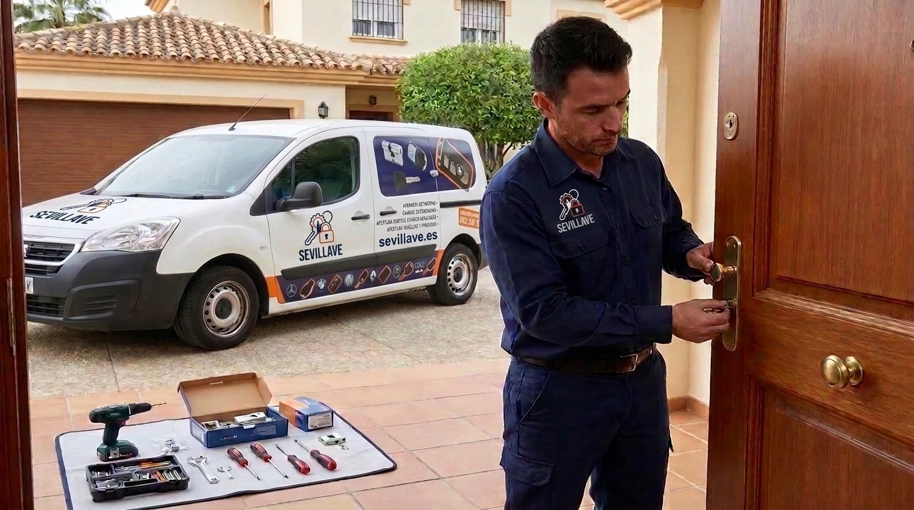
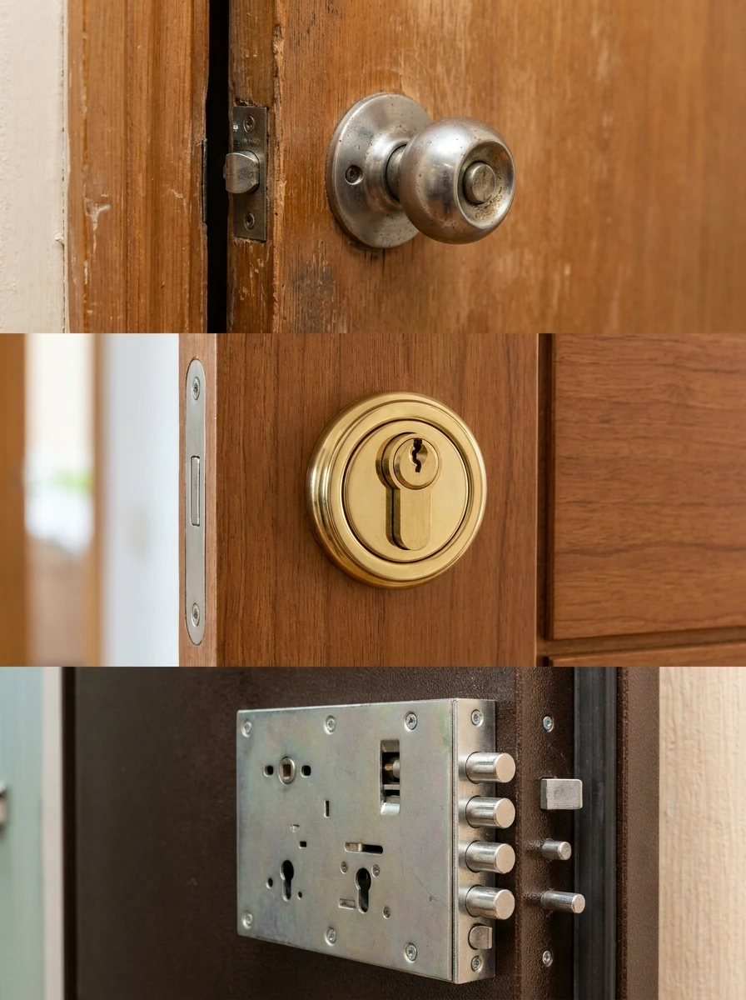
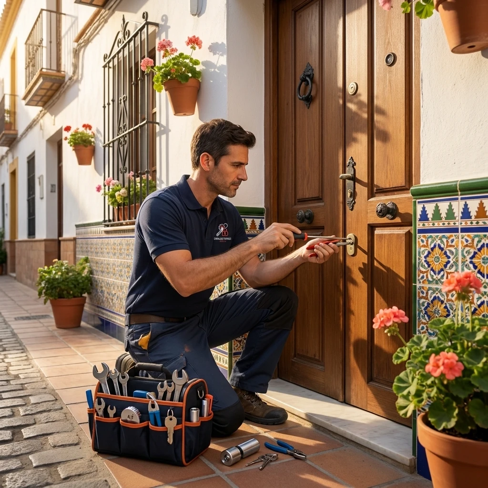
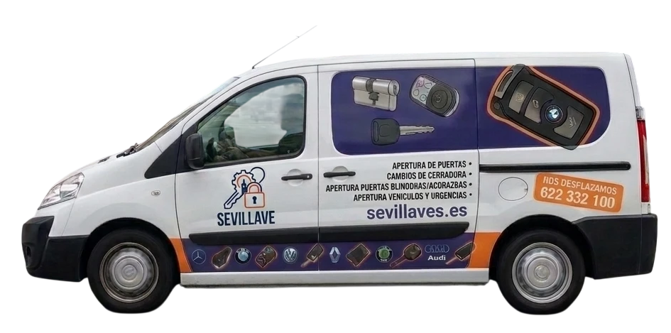

Cerrajeros en Sevilla con +10 años de experiencia en urgencias 24h
Cerrajería profesional en Sevilla para urgencias, aperturas, cambios de cerradura y sistemas de seguridad. Llegamos rápido, trabajamos sin dañar la puerta siempre que sea posible y te informamos del precio antes de intervenir.
Cerrajería local en Sevilla, preparada para cualquier situación
Empezamos atendiendo urgencias en Triana y hoy cubrimos toda Sevilla Capital y alrededores. Desde 2012, ayudamos a particulares y negocios con todo tipo de trabajos de cerrajería, aunque nuestra especialidad principal son las urgencias 24 horas.
Somos un equipo de +15 técnicos preparados para actuar ante pérdidas de llaves, puertas bloqueadas, cerraduras averiadas y otros problemas de acceso.
Además de las urgencias, realizamos cambios y reparaciones de cerraduras, instalación de sistemas de seguridad y trabajos de cerrajería para viviendas, negocios y vehículos.

Nuestros servicios de cerrajería
Soluciones rápidas, eficaces y con materiales de máxima calidad para cualquier necesidad de acceso o seguridad.
Cerrajería de urgencia 24h
Atendemos cualquier problema de acceso en Sevilla Capital y área metropolitana durante las 24 horas, los 365 días del año. Llegada récord de 20 a 30 minutos.
Ver servicio urgenteApertura de puertas
Abrimos puertas de viviendas, locales comerciales e interiores utilizando técnicas limpias para evitar daños en la cerradura y en la estructura.
Apertura de puertasCambio y reparación de cerraduras
Sustituimos bombines averiados o desgastados por cilindros nuevos garantizados, adaptados a la medida y necesidades de tu puerta.
Cambio de bombinesCerraduras de alta seguridad
Instalamos bombines antibumping, antiganzúa y antitaladro con escudos protectores acorazados para blindar tu vivienda contra intrusiones.
Alta seguridad
Puertas blindadas y acorazadas
Mantenimiento, ajuste e instalación de mecanismos de cierre multipunto de máxima resistencia en accesos blindados y acorazados.
Puertas blindadas
Apertura de vehículos
Apertura técnica y no destructiva de vehículos en Sevilla cuando las llaves han quedado olvidadas dentro del habitáculo o maletero.
Apertura de cochesMás de una década resolviendo problemas de cerrajería en Sevilla
+14 años de experiencia
Desde 2012, hemos atendido miles de servicios de cerrajería en Sevilla Capital y sus alrededores.
Especialistas en puertas blindadas y acorazadas
Contamos con herramientas y conocimientos específicos para trabajar con sistemas de cierre de mayor seguridad.
Formación continua
Nos mantenemos actualizados en nuevos sistemas de cierre, cerraduras de alta seguridad, llaves de proximidad y soluciones electrónicas.
Lo que dicen nuestros clientes en Google
4,9 ★
Valoración media basada en 327 reseñas
Reseñas recientes de clientes en Sevilla
Carlos M.
Triana, Sevilla“Me quedé fuera de casa por la noche y en menos de media hora ya estaban aquí. La apertura fue rápida y no dañaron la puerta.”
Laura G.
Nervión, Sevilla“Muy profesionales y rápidos. Me explicaron el precio antes de empezar y no tuve ninguna sorpresa.”
Antonio R.
Los Remedios, Sevilla“Tuve un problema con la cerradura de la puerta blindada. El técnico consiguió solucionarlo sin tener que cambiarla.”
Marta P.
Sevilla Este“Servicio de urgencia muy bueno. Llegaron incluso antes de lo que me habían indicado.”
Javier S.
Macarena, Sevilla“Cambiaron el bombín por uno antibumping de alta seguridad en 20 minutos. Trato inmejorable y precio super razonable.”
Rocío D.
Mairena del Aljarafe“Se me quedaron las llaves dentro del coche en el parking. Llegaron rápido y abrieron la puerta sin un solo rasguño.”
Manuel B.
Centro, Sevilla“Da gusto encontrar profesionales honrados. Diagnóstico claro, sin rodeos y factura con garantía oficial. 100% recomendados.”
Carmen V.
Dos Hermanas“Llegaron en festivo a las 11 de la noche en menos de 25 minutos. Me salvaron la noche, trabajo impecable.”
Dónde encontrarnos: Sevilla Capital y alrededores
Atendemos Sevilla Capital y su área metropolitana, con desplazamiento incluido en el precio.
Sevilla Capital
20–30 minDesplazamiento incluido en todos los distritos y barrios de la capital sevillana:
Triana
Nervión
Los Remedios
Macarena
Sevilla Este
San Pablo-Santa Justa
Centro
Cerro-Amate
Sur
Bellavista
Bermejales
Pino Montano
San Jerónimo
Área Metropolitana
Cobertura RápidaServicio urgente con unidades móviles directas en los principales municipios metropolitanos:
Mairena del Aljarafe
Dos Hermanas
Alcalá de Guadaíra
San Juan de Aznalfarache
Tomares
Camas
Bormujos
Castilleja de la Cuesta
Gines
La Rinconada
Santiponce
Espartinas
¿Necesitas un cerrajero de confianza en Sevilla?
Estamos disponibles las 24 horas para ayudarte cuando más lo necesitas. Llama ahora o escríbenos por WhatsApp y cuéntanos qué problema tienes.
